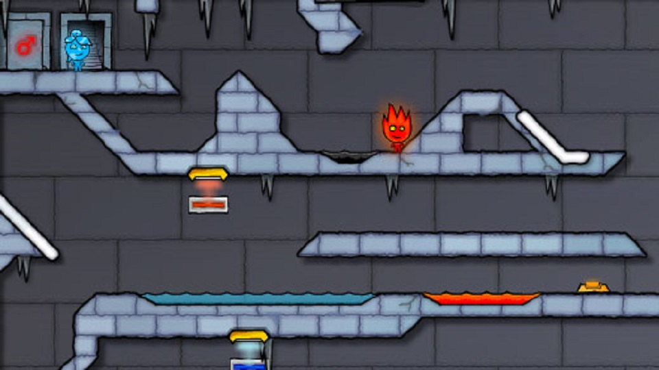
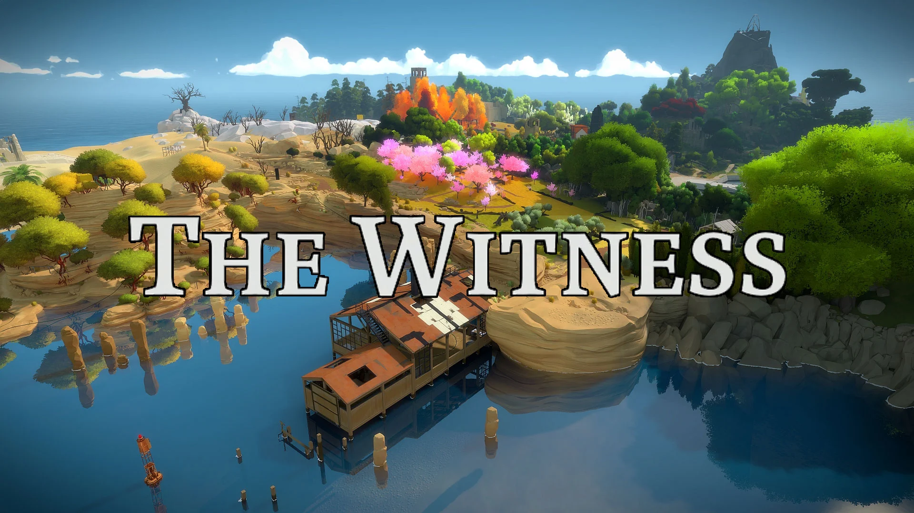

● Jocurile puzzle
Jocurile video puzzle își datorează originile jocurilor de dezvoltare mentală și puzzle-urilor de-a lungul istoriei omenirii. Jocul de strategie matematică Nim și alte jocuri tradiționale de gândire, cum ar fi Hangman and Bulls and Cows (comercializat ca Mastermind), au fost ținte populare pentru implementarea computerului.
Tetris a revoluționat și a popularizat genul jocurilor de puzzle. Jocul a fost creat de designerul de jocuri sovietic Alexey Pajitnov în 1984. Pajitnov a fost inspirat de un joc de puzzle tradițional numit Pentominos, în care jucătorii aranjează blocurile în rânduri fără goluri. Jocul a fost lansat de Spectrum Holobyte pentru MS-DOS în 1987 și Atari Games în arcade în 1988 și s-a vândut în 30 de milioane de copii pentru Game Boy.
Definiție și gameplay
Jocurile puzzle se concentrează pe provocări logice și conceptuale, deși adesea jocurile adaugă presiunea timpului sau alte elemente de acțiune. Deși multe jocuri de acțiune și jocuri de aventură implică puzzle-uri, cum ar fi obținerea de obiecte inaccesibile, un adevărat joc de puzzle se concentrează pe rezolvarea puzzle-urilor ca activitate principală de joc. Jocurile implică de obicei forme, culori sau simboluri, iar jucătorul trebuie să le manipuleze direct sau indirect într-un model specific.
În loc să prezinte o colecție aleatorie de puzzle-uri de rezolvat, jocurile puzzle oferă de obicei o serie de puzzle-uri înrudite care sunt o variație pe o singură temă. Această temă ar putea implica recunoașterea modelelor, logica sau înțelegerea unui proces. Aceste jocuri au de obicei un set simplu de reguli, în care jucătorii manipulează piesele jocului pe o grilă, o rețea sau alt spațiu de interacțiune. Jucătorii trebuie să dezlege indicii pentru a atinge o condiție de victorie, care le va permite apoi să avanseze la nivelul următor. Completarea fiecărui puzzle va duce de obicei la o provocare mai dificilă, deși unele jocuri evită să epuizeze jucătorul, oferind niveluri mai ușoare între cele mai dificile.
În jocurile de aventură, unele etape necesită rezolvarea puzzle-urilor ca o modalitate de a avansa povestea.
Puzzle de acțiune
Un puzzle de acțiune sau un puzzle arcade necesită ca jucătorul să manipuleze piesele jocului într-un mediu în timp real, adesea pe un singur ecran și cu o limită de timp, pentru a rezolva puzzle-ul sau pentru a elimina nivelul. Acesta este un termen larg care a fost folosit pentru a descrie mai multe subseturi de joc de puzzle. În primul rând, include puzzle-uri cu blocuri care cad, cum ar fi Tetris și KLAX. Include jocuri cu personaje care se deplasează printr-un mediu, controlate fie direct (Lode Runner), fie indirect (Lemmings). Acest lucru se poate încrucișa cu alte genuri de acțiune: un joc de platformă care necesită o mecanică nouă pentru a finaliza nivelurile ar putea fi un „platform puzzle”, cum ar fi manipularea timpului în Braid. În cele din urmă, include și alte jocuri de acțiune care necesită sincronizare și precizie cu abilități de potrivire a modelelor sau de logică, cum ar fi Portal la persoana întâi și The Talos Principle.
Joc cu obiecte ascunse
Un joc cu obiecte ascunse este un gen de joc video puzzle în care jucătorul trebuie să găsească elemente dintr-o listă care sunt ascunse într-o imagine. Jocurile cu obiecte ascunse sunt o tendință populară în jocurile ocazionale și sunt relativ ieftin de cumpărat. Versiunile de încercare limitate în timp ale acestor jocuri sunt de obicei disponibile pentru descărcare.
Un joc timpuriu cu obiecte ascunse a fost Alice: An Interactive Museum. Computer Gaming World a raportat în 1993 că „un dezavantaj al căutării ecran după ecran pentru „comutatoare” este că, după un timp, cineva dezvoltă un caz de „clickitus” al degetelor, când apăsați în mod repetat butonul de mouse ca un pui care ciugulește la o curte„. Alte încarnări timpurii sunt adaptările jocurilor video ale cărților I Spy publicate de Scholastic Corporation din 1997.
|  |
Joc de fizică
Un joc de fizică este un tip de joc video puzzle în care jucătorul trebuie să folosească fizica jocului pentru a finaliza fiecare puzzle. Jocurile de fizică folosesc fizica realistă pentru a face jocurile mai provocatoare. Genul este popular în special în jocurile flash online și jocurile mobile. Educatorii au folosit aceste jocuri pentru a demonstra principiile fizicii.
Jocurile de fizică populare includ The Incredible Machine, World of Goo, Crayon Physics Deluxe, Angry Birds, Cut the Rope, Peggle, Portal, Portal 2, Monster Strike și The Talos Principle.
Potrivirea plăcilor
În jocurile video de potrivire a plăcilor, jucătorul manipulează plăcile pentru a le face să dispară conform unui criteriu de potrivire. Genul a început cu Chain Shot! din 1985. Include jocuri din varietatea „bloc care căde”, precum Tetris, jocuri care necesită schimbarea pieselor, cum ar fi Bejeweled sau Candy Crush Saga, jocuri care adaptează jocul clasic bazat pe piese Mahjong, cum ar fi Mahjong Trails, și jocuri în care sunt împușcați pe tablă, cum ar fi Zuma. În multe jocuri recente de potrivire a plăcilor, criteriul de potrivire este plasarea unui anumit număr de piese de același tip, astfel încât acestea să se alăture. Acest număr este adesea de trei, iar subsetul corespunzător de jocuri de potrivire a piesei este denumit „jocuri cu trei meciuri”.
Cele mai mari jocuri puzzle:
|  |
 |